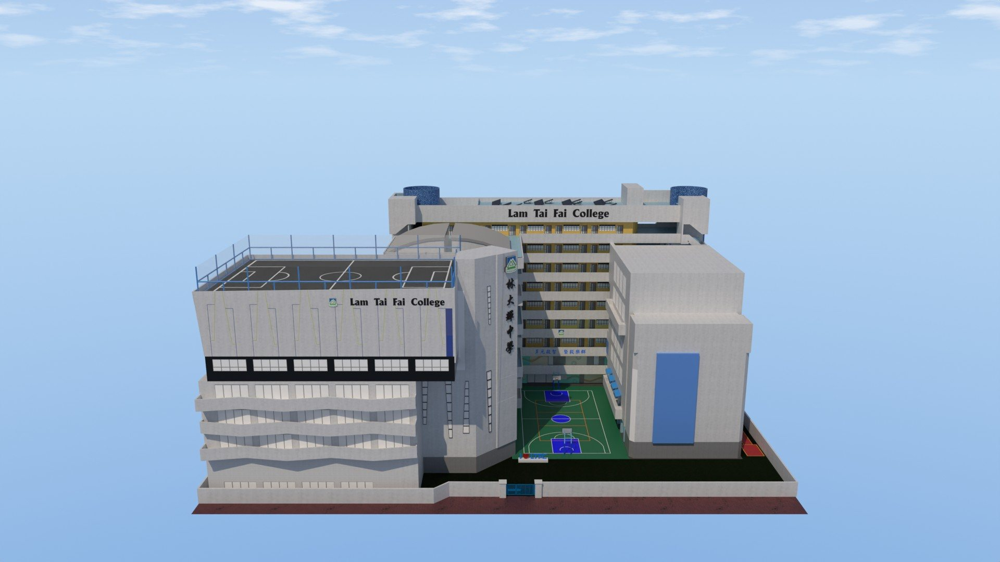

Virtual school campuses
Walkable, low-poly copies of two Hong Kong secondary schools, built at Metaprint so students could explore their own campus as avatars in Oncyber. I modelled both on my own: CCC Rotary in a one-month sprint, then Lam Tai Fai College in my evenings and on annual leave after I started full-time work. Both were presented to the principals and department heads.
- Schools
- Lam Tai Fai College · CCC Rotary Secondary School
- Modelling
- Blender, every building and room by me
- Reference
- My own Insta360 photos and video, plus three floor plans
- Textures
- Brick, checker and plaster patterns made in Substance Designer
- Platform
- Oncyber, walkable with avatars
- LTFC set
- The school building plus nine special rooms
Look around the school
For LTFC I modelled the whole school building and its special rooms: the classroom, new and old gyms, hall, library, lecture theatre, bio lab, fashion centre and Chinese cultural room. These are 360° renders of the final models, from two spots on the campus and three inside the library.

The 3D models themselves aren't published here: they're client work and the layout of a real school, so the page shows rendered views only.
Two schools, one modeller
- SOLO
One modeller
Every building, room and texture on both campuses was modelled by me.
- CCC ROTARY
A one-month deadline
The whole campus exterior plus its special rooms, from first block-out to a walkable Oncyber space, in one month.
- REFERENCE
Working from 360° footage
Reference material was limited at the start, so with the school's permission I visited with an Insta360 to capture 360° photos and video. Full floor plans weren't available; three arrived later in the project, so most of the campus was rebuilt from the 360° footage and my own judgement.
- SCALE
Keeping it consistent
The hardest part was keeping every building and room at the same scale when each was measured from photos rather than drawings.
- LTFC
After hours
Lam Tai Fai College came after I started full-time work, so I modelled it in the evenings and on annual leave.
- TEXTURES
Learning Substance Designer
I learned Substance Designer to make the pattern textures: brick walls, checker tiles and plaster in the school's colours.
- LIGHTING
Why it isn't baked
Oncyber's real-time lighting is simple, so I tried baking the lighting into the textures. My bakes came out with large black patches, so the final models use clean, unbaked textures. The views on this page are rendered in Blender Cycles instead.
Ten lessons built on the school's own rooms
The campus models became teaching material. At Metaprint I wrote a 10-lesson Blender course for LTFC, with slides and starter files for every lesson, for a partner to teach. Students learn modelling by rebuilding and decorating rooms they use every day.
- 1
Shape of Classroom
Block out a real classroom from its measurements.
- 2
Table and Chair
Model the school furniture. Watch the tutorials.
- 3
UV Mapping
Unwrap the models so textures sit straight.
- 4
Array
Repeat desks, chairs and windows with the Array modifier.
- 5
Metaverse
Take the room into a walkable virtual space.
- 6
Lighting
Light the room for day and night.
- 7
Rendering
Set up cameras and render the scene.
- 8
New Gym Decoration
Decorate the model of the school's new gym.
- 9
Procedural Texture and Baking
Build materials from nodes, then bake them for the web.
- 10
Bio Lab Decoration
Fit out the biology lab model as a final project.